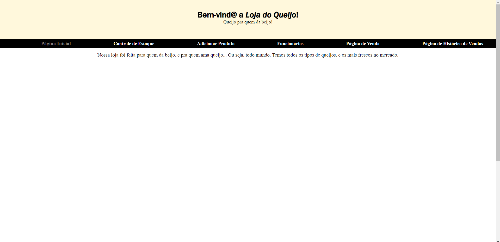

.projects{

Loja do Queijo
Desenvolvi esse meu primeiro site com a Labenu com o intuito de vendas de queijo que é meu alimento preferido. Apesar do site ser muito avançado e cheio de tecnologias ele é muito facil de mexer.
Tecnologias Usadas
- Git
- Github
- HTML5
- CSS